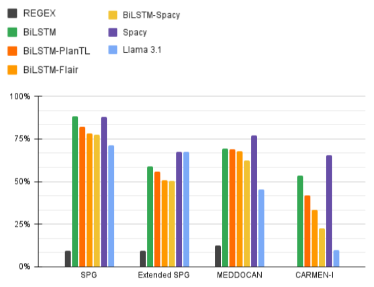

<!DOCTYPE html>
<html lang="en">
<head>
    <meta charset="UTF-8">
    <meta name="viewport" content="width=device-width, initial-scale=1.0">
    <title>Clinical Text Anonymization Poster</title>
    <script src="https://cdn.tailwindcss.com"></script>
    <script crossorigin src="https://unpkg.com/react@18/umd/react.production.min.js"></script>
    <script crossorigin src="https://unpkg.com/react-dom@18/umd/react-dom.production.min.js"></script>
    <script src="https://unpkg.com/@babel/standalone/babel.min.js"></script>
</head>
<body>
    <div id="root"></div>
    
    <script type="text/babel">
        // Icon components (simplified SVG replacements)
        const Shield = () => (
            <svg className="w-8 h-8 text-blue-700" fill="none" stroke="currentColor" viewBox="0 0 24 24">
                <path strokeLinecap="round" strokeLinejoin="round" strokeWidth={2} d="M9 12l2 2 4-4M7.835 4.697a3.42 3.42 0 001.946-.806 3.42 3.42 0 014.438 0 3.42 3.42 0 001.946.806 3.42 3.42 0 013.138 3.138 3.42 3.42 0 00.806 1.946 3.42 3.42 0 010 4.438 3.42 3.42 0 00-.806 1.946 3.42 3.42 0 01-3.138 3.138 3.42 3.42 0 00-1.946.806 3.42 3.42 0 01-4.438 0 3.42 3.42 0 00-1.946-.806 3.42 3.42 0 01-3.138-3.138 3.42 3.42 0 00-.806-1.946 3.42 3.42 0 010-4.438 3.42 3.42 0 00.806-1.946 3.42 3.42 0 013.138-3.138z" />
            </svg>
        );

        const Activity = () => (
            <svg className="w-8 h-8 text-blue-700" fill="none" stroke="currentColor" viewBox="0 0 24 24">
                <path strokeLinecap="round" strokeLinejoin="round" strokeWidth={2} d="M13 10V3L4 14h7v7l9-11h-7z" />
            </svg>
        );

        const Database = () => (
            <svg className="w-6 h-6 text-indigo-600" fill="none" stroke="currentColor" viewBox="0 0 24 24">
                <path strokeLinecap="round" strokeLinejoin="round" strokeWidth={2} d="M4 7v10c0 1.105 2.686 2 6 2s6-.895 6-2V7m0 0c0 1.105-2.686 2-6 2s-6-.895-6-2m0 0c0-1.105 2.686-2 6-2s6 .895 6 2m0 5c0 1.105-2.686 2-6 2s-6-.895-6-2" />
            </svg>
        );

        const CheckCircle = () => (
            <svg className="w-4 h-4 text-emerald-600" fill="currentColor" viewBox="0 0 20 20">
                <path fillRule="evenodd" d="M10 18a8 8 0 100-16 8 8 0 000 16zm3.707-9.293a1 1 0 00-1.414-1.414L9 10.586 7.707 9.293a1 1 0 00-1.414 1.414l2 2a1 1 0 001.414 0l4-4z" clipRule="evenodd" />
            </svg>
        );

        function App() {
            return (
                <div className="min-h-screen bg-slate-200 py-10 px-4 sm:px-10 font-sans text-slate-800 flex justify-center">
                    <div className="bg-white max-w-7xl w-full shadow-2xl rounded-2xl overflow-hidden border border-slate-300">
                        
                        {/* Header Section */}
                        <header className="bg-gradient-to-r from-blue-900 to-indigo-800 text-white p-10 text-center relative overflow-hidden">
                            <div className="absolute top-0 left-0 w-full h-full opacity-10" style={{backgroundImage: 'url(https://www.transparenttextures.com/patterns/cubes.png)'}}></div>
                            <div className="relative z-10">
                                <div className="flex flex-wrap justify-center mb-6 gap-3">
                                    <span className="bg-emerald-800/50 px-4 py-1.5 rounded-full text-xs md:text-sm font-semibold tracking-wide border border-blue-400/30 uppercase text-center">
                                        Clinical Text Anonymization
                                    </span>
                                    <span className="bg-emerald-800/50 px-4 py-1.5 rounded-full text-xs md:text-sm font-semibold tracking-wide border border-indigo-400/30 uppercase text-center">
                                        Spanish Clinical NLP
                                    </span>
                                    <span className="bg-emerald-800/50 px-4 py-1.5 rounded-full text-xs md:text-sm font-semibold tracking-wide border border-emerald-400/30 uppercase text-center">
                                        De-identification Methods Comparison
                                    </span>
                                </div>
                                <h1 className="text-4xl md:text-5xl font-extrabold tracking-tight mb-6 leading-tight drop-shadow-md">
                                    A Comparative Study of Approaches to Anonymization <br className="hidden md:block" /> of Clinical Free Text in Spanish
                                </h1>
                                <p className="text-sm font-medium text-blue-100 mb-2">
                                    Florencia Brunello, Serena Villata, Laura Alonso Alemany, Milagro Teruel
                                </p>
                                <p className="text-sm text-blue-200 font-light mb-6">
                                    Universidad Nacional de Córdoba (UNC) &amp; Université Côte d'Azur &amp; National Center for Scientific Research (CNRS)
                                </p>
                                <a href="mailto:florenciabrunello@unc.edu.ar" className="inline-block px-6 py-2 rounded-full bg-white/10 hover:bg-white/20 transition backdrop-blur-sm border border-white/20 text-sm font-medium">
                                    florenciabrunello@unc.edu.ar
                                </a>
                            </div>
                        </header>

                        {/* Main Content Grid */}
                        <main className="p-8 md:p-12 grid grid-cols-1 md:grid-cols-3 gap-8 md:gap-10">
                            
                            {/* Column 1 */}
                            <div className="space-y-8">
                                <section>
                                    <div className="flex items-center gap-3 mb-4 border-b-2 border-blue-800 pb-2">
                                        <Shield />
                                        <h2 className="text-2xl font-bold text-blue-900 uppercase tracking-wide">1. Motivation</h2>
                                    </div>
                                    <p className="text-sm leading-relaxed mb-4">
                                        The anonymization of clinical free-text records is a strict prerequisite for enabling the <strong>secondary use of healthcare data</strong> while preserving patient privacy.
                                    </p>
                                    <div className="bg-red-50 border-l-4 border-red-500 p-4 rounded-r-lg">
                                        <h3 className="font-bold text-red-800 mb-1">The Problem</h3>
                                        <p className="text-sm text-red-900/80">
                                            This challenge is particularly acute for <strong>Spanish clinical text</strong>, where annotated resources are scarce and practitioners lack clear empirical guidance on which technological approaches to use.
                                        </p>
                                    </div>
                                </section>

                                <section>
                                    <div className="flex items-center gap-3 mb-4 border-b-2 border-blue-800 pb-2">
                                        <Activity />
                                        <h2 className="text-2xl font-bold text-blue-900 uppercase tracking-wide">2. Objective</h2>
                                    </div>
                                    <p className="text-sm leading-relaxed">
                                        A <strong>controlled comparative study</strong> of representative anonymization paradigms for Spanish clinical narratives to determine the most effective approach based on restrictions and capabilities.
                                    </p>
                                </section>

                                <section>
                                    <div className="flex items-center gap-3 mb-4 border-b-2 border-blue-800 pb-2">
                                        <h2 className="text-2xl font-bold text-blue-900 uppercase tracking-wide">3. Datasets</h2>
                                    </div>
                                    <p className="text-sm leading-relaxed mb-4 text-slate-700">
                                        To ensure <strong>fair evaluation</strong> of different approaches we include datasets that have not been used to train large pretrained models. We also create synthetic datasets specifically tailored for this evaluation.
                                    </p>
                                    

                                    <div className="bg-blue-50 border border-blue-200 p-4 rounded-lg mb-4">
                                    <h3 className="font-bold text-blue-900 mb-2">Datasets</h3>

                                    <ul className="text-sm space-y-2 text-slate-700 mb-3">
                                        <li>
                                            • <strong>MEDDOCAN</strong> - 1,000 synthetic clinical cases (IberLEF 2019), manually curated with realistic PHI from discharge summaries and genetics records.
                                        </li>
                                        <li>
                                            • <strong>CARMEN-I</strong> - 1,697 anonymized clinical narratives (2020–2022, Hospital Clínic de Barcelona): radiology, discharge, transfer, exitus, and clinical notes.
                                        </li>
                                        <li>
                                            • <strong>SPG Dataset</strong> - Synthetic Patient Generator for synthetic spanish clinical documents.
                                        </li>
                                        <li>
                                            • <strong>SPG+LLM</strong> - Extension using Llama 3.1 (448 documents) for richer linguistic variability while preserving original structure after manual curation.
                                        </li>
                                    </ul>
                                </div>

                                    <div className="bg-slate-50 border border-slate-200 p-4 rounded-lg mb-4">
                                        <h3 className="font-bold text-slate-900 mb-2 text-sm">Categories of personal information</h3>
                                        <p className="text-sm text-slate-600">
                                            Annotations follow MEDDOCAN Protected Health Information (PHI) guidelines with <strong>28 entity types</strong> covering personal identifiers, healthcare professionals, institutions, locations, dates, contact information, and other sensitive attributes.
                                        </p>
                                    </div>
                                </section>

                                <section className="bg-indigo-50 border border-indigo-200 p-6 rounded-2xl shadow-sm">
                                    <h3 className="text-xl font-bold text-indigo-900 mb-3 flex items-center gap-2">
                                        <Database />
                                        Contribution: Synthetic Datasets
                                    </h3>
                                    <p className="text-indigo-900/80 leading-relaxed text-sm">
                                        To ensure a <strong>fair and contamination-aware evaluation</strong>, particularly given the opacity of pretrained LLMs training data, we introduced a synthetic clinical dataset designed to mirror the structural properties of established benchmarks while avoiding direct overlap.
                                    </p>
                                </section>
                            </div>

                            {/* Column 2 */}
                            <div className="space-y-8">
                                <section>
                                    <div className="flex items-center gap-3 mb-4 border-b-2 border-indigo-800 pb-2">
                                        <Database />
                                        <h2 className="text-2xl font-bold text-indigo-900 uppercase tracking-wide">4. Approaches Compared</h2>
                                    </div>
                                    <div className="grid gap-4">
                                        <div className="bg-slate-100 p-4 rounded-xl border border-slate-200 flex items-start gap-3">
                                            <span className="w-4 h-4 bg-slate-700 rounded-sm shrink-0 mt-1"></span>
                                            <div>
                                                <h3 className="font-bold">REGEX</h3>
                                                <p className="text-sm text-slate-600">The established deterministic baseline.</p>
                                            </div>
                                        </div>
                                        <div className="bg-slate-100 p-4 rounded-xl border border-slate-200 flex items-start gap-3">
                                            <span className="w-4 h-4 bg-blue-400 rounded-sm shrink-0 mt-1"></span>
                                            <div>
                                                <h3 className="font-bold">Large Language Models (LLMs)</h3>
                                                <h3 className="font-bold">Llama 3.1</h3>
                                                <p className="text-sm text-slate-600">General-purpose models under prompt-based inference. </p>
                                            </div>
                                        </div>
                                        <div className="bg-slate-100 p-4 rounded-xl border border-slate-200 flex items-start gap-3">
                                            <span className="w-4 h-4 bg-purple-600 rounded-sm shrink-0 mt-1"></span>
                                            <div>
                                                <h3 className="font-bold">Spacy (Off-the-shelf)</h3>
                                                <p className="text-sm text-slate-600">Industrial NLP toolkit approach.</p>
                                            </div>
                                        </div>
                                        <div className="bg-slate-100 p-4 rounded-xl border border-slate-200 flex items-start gap-3">
                                            <div className="flex gap-1 shrink-0 mt-1">
                                                <span className="w-4 h-4 bg-yellow-400 rounded-sm"></span>
                                            </div>
                                            <div>
                                                <h3 className="font-bold">Recurrent Neural Networks (BiLSTM)</h3>
                                                <p className="text-sm text-slate-600">Trainable neural sequence labeling architectures.</p>
                                                <div className="flex flex-wrap gap-2 mt-2">
                                                    <div className="flex items-center gap-1">
                                                        <span className="w-3 h-3 bg-green-500 rounded-sm"></span>
                                                        <span className="text-xs">BiLSTM</span>
                                                    </div>
                                                    <div className="flex items-center gap-1">
                                                        <span className="w-3 h-3 bg-orange-500 rounded-sm"></span>
                                                        <span className="text-xs">BiLSTM-PlanTL</span>
                                                    </div>
                                                    <div className="flex items-center gap-1">
                                                        <span className="w-3 h-3 bg-yellow-500 rounded-sm"></span>
                                                        <span className="text-xs">BiLSTM-Flair</span>
                                                    </div>
                                                    <div className="flex items-center gap-1">
                                                        <span className="w-3 h-3 bg-yellow-400 rounded-sm"></span>
                                                        <span className="text-xs">BiLSTM-Spacy</span>
                                                    </div>
                                                </div>
                                            </div>
                                        </div>
                                    </div>
                                </section>                                
                                
                                <section>
                                    <div className="flex items-center gap-3 mb-4 border-b-2 border-indigo-800 pb-2">
                                        <h2 className="text-2xl font-bold text-indigo-900 uppercase tracking-wide">5. Results - F1 Performance Comparison</h2>
                                    </div>
                                    <div className="flex justify-center">
                                        
                                    </div>
                                </section>

                                <section>
                                    <div className="flex items-center gap-3 mb-4 border-b-2 border-emerald-700 pb-2">
                                        <h2 className="text-2xl font-bold text-emerald-900 uppercase tracking-wide">6. Analysis Results</h2>
                                    </div>

                                    <div className="bg-emerald-50 border border-emerald-200 p-4 rounded-lg mb-3">
                                        <h4 className="font-bold text-emerald-900 mb-2 text-sm">Performance by Dataset:</h4>
                                        <div className="space-y-2 text-sm text-slate-700">
                                            <p><strong>SPG (Synthetic):</strong> spaCy achieves 0.880 F1, showing strong performance in controlled data.</p>
                                            <p><strong>Extended SPG:</strong> spaCy (0.675) and Llama 3.1 (0.674) perform similarly, likely due to Llama-generated data.</p>
                                            <p><strong>MEDDOCAN:</strong> spaCy reaches 0.770 F1, with possible data leakage influencing results.</p>
                                            <p><strong>CARMEN-I (Natural):</strong> spaCy obtains 0.657 F1, while REGEX drops to 0.001, highlighting poor generalization.</p>
                                        </div>
                                    </div>

                                    <div className="h-4"></div>

                                    <div className="text-sm text-slate-700 space-y-2">
                                        <p>
                                            Overall, <strong>learning-based approaches clearly outperform rule-based methods</strong> across all datasets. 
                                            REGEX systems show very limited portability, especially in real-world data such as CARMEN-I, where linguistic variability is high.
                                        </p>
                                    </div>
                                </section>

                            </div>

                            {/* Column 3 */}
                            <div className="space-y-8">
                                <section>
                                    <div className="text-sm text-slate-700 space-y-2">
                                        <p>
                                            <strong>BiLSTM-based models</strong> consistently deliver strong performance, particularly when fully trained on the target dataset. 
                                            Models relying on pre-trained embeddings show lower performance, especially in heterogeneous clinical texts.
                                        </p>

                                        <p>
                                            <strong>spaCy</strong> emerges as the best overall approach, likely due to its richer internal representations and 
                                            end-to-end training tailored to each dataset.
                                        </p>

                                        <p>
                                            <strong>Llama 3.1</strong> performs well only on synthetic data similar to its training distribution, but fails to generalize 
                                            to natural datasets, revealing risks of evaluation bias when using LLM-generated corpora.
                                        </p>
                                    </div>
                                    <div className="h-4"></div>
                                    <div className="h-4"></div>
                                    <div className="flex items-center gap-3 mb-4 border-b-2 border-emerald-700 pb-2">
                                        <svg className="w-8 h-8 text-emerald-600" fill="none" stroke="currentColor" viewBox="0 0 24 24">
                                            <path strokeLinecap="round" strokeLinejoin="round" strokeWidth={2} d="M9 19v-6a2 2 0 00-2-2H5a2 2 0 00-2 2v6a2 2 0 002 2h2a2 2 0 002-2zm0 0V9a2 2 0 012-2h2a2 2 0 012 2v10m-6 0a2 2 0 002 2h2a2 2 0 002-2m0 0V5a2 2 0 012-2h2a2 2 0 012 2v14a2 2 0 01-2 2h-2a2 2 0 01-2-2z" />
                                        </svg>

                                        <h2 className="text-3xl font-bold text-emerald-900 uppercase tracking-wide">7. Key Findings</h2>
                                    </div>
                                    
                                    <div className="space-y-3 mb-4">
                                        <div className="bg-blue-50 rounded-lg p-4 border border-blue-200">
                                            <h3 className="font-bold text-blue-900 mb-2">BiLSTMs outperform LLMs especially in more natural datasets</h3>
                                            <p className="text-blue-700 text-sm">
                                                Fully trained BiLSTM achieves superior performance on CARMEN-I (natural data) vs. Llama 3.1. Trained embeddings on specific datasets improve performance.
                                            </p>
                                        </div>

                                        <div className="bg-emerald-50 rounded-lg p-4 border border-emerald-200">
                                            <h3 className="font-bold text-emerald-900 mb-2">spaCy: Industrial NLP Toolkit</h3>
                                            <p className="text-emerald-700 text-sm">
                                                Superior architecture and end-to-end training tailored to each dataset. Highest F1 scores across all datasets.
                                            </p>
                                        </div>

                                        <div className="bg-yellow-50 rounded-lg p-4 border border-yellow-200">
                                            <h3 className="font-bold text-yellow-900 mb-2">LLM (Llama 3.1): Pretrained Models</h3>
                                            <p className="text-yellow-700 text-sm">
                                                High performance only on synthetic data (F1 0.674), but fails on natural CARMEN-I (F1 0.098). Significantly more errors than specifically trained BiLSTM.
                                                LLMs show high variability and significantly more errors.
                                            </p>
                                        </div>

                                        <div className="bg-red-50 rounded-lg p-4 border border-red-200">
                                            <h3 className="font-bold text-red-900 mb-2">REGEX: Limited and domain-dependent</h3>
                                            <p className="text-red-700 text-sm">
                                                Very poor performance on natural data (CARMEN-I: F1 0.001). Unable to generalize beyond explicit patterns. Learning-based approaches substantially outperform across all datasets.
                                            </p>
                                        </div>
                                    </div>
                                </section>

                                <section>
                                    <div className="flex items-center gap-3 mb-4 border-b-2 border-emerald-700 pb-2">
                                        <svg className="w-8 h-8 text-emerald-600" fill="none" stroke="currentColor" viewBox="0 0 24 24">
                                            <path strokeLinecap="round" strokeLinejoin="round" strokeWidth={2} d="M12 6V4m0 2a2 2 0 100 4m0-4a2 2 0 110 4m-6 8a2 2 0 100-4m0 4a2 2 0 110-4m0 4v2m0-6V4m6 6v10m6-2a2 2 0 100-4m0 4a2 2 0 110-4m0 4v2m0-6V4" />
                                        </svg>
                                        <h2 className="text-2xl font-bold text-emerald-900 uppercase tracking-wide">8. Recommendations</h2>
                                    </div>
                                    
                                    <div className="bg-slate-50 rounded-lg p-4 border border-slate-200 text-sm leading-relaxed">
                                        <p className="text-slate-800 font-semibold mb-2">
                                            The choice of anonymization approach must consider available resources, infrastructure, and expertise:
                                        </p>
                                        <ul className="text-slate-800 space-y-2 text-sm">
                                            <li className="ml-3"><strong>BiLSTM-CRF:</strong> High performance with technical expertise required. Off-the-shelf, industrial-level tools available (spaCy). Errors: confusion between similar entities, poor rare case detection.</li>
                                            <li className="ml-3"><strong>Llama 3.1 (LLMs):</strong> Significantly more errors than specifically trained BiLSTM. Demands hardware and operational knowledge. Errors: over-anonymization, hallucinations, unintended modifications.</li>
                                            <li className="ml-3"><strong>Regular Expressions:</strong> Accessible and low-cost but domain-dependent. Effective for patterns but fail with linguistic variability.</li>
                                        </ul>
                                    </div>
                                </section>
                            </div>
                        </main>

                        {/* Acknowledgements Section - Full Width */}
                        <section className="px-8 md:px-12 py-8 bg-emerald-50 border-t border-emerald-200">
                            <div className="flex items-center gap-3 mb-4 border-b-2 border-emerald-700 pb-2">
                                <svg className="w-8 h-8 text-emerald-600" fill="none" stroke="currentColor" viewBox="0 0 24 24">
                                    <path strokeLinecap="round" strokeLinejoin="round" strokeWidth={2} d="M14.828 14.828a4 4 0 01-5.656 0M9 10h.01M15 10h.01M21 12a9 9 0 11-18 0 9 9 0 0118 0z" />
                                </svg>
                                <h2 className="text-2xl font-bold text-emerald-900 uppercase tracking-wide">Acknowledgements</h2>
                            </div>
                            <div className="bg-white rounded-lg p-4 border border-emerald-200">
                                <p className="text-sm text-slate-800 leading-relaxed">
                                    This study was partially supported by ARPHAI-CIECTI, a project funded by IDRC (Canada) and SIDA (Sweden). This work used computational resources from UNC Supercómputo (CCAD) – Universidad Nacional de Córdoba (https://supercomputo.unc.edu.ar), which are part of SNCAD, República Argentina.
                                </p>
                            </div>
                        </section>

                        <section className="px-8 md:px-12 py-6 bg-slate-50 border-t border-slate-200">
                            <div className="flex items-center gap-3 mb-3 border-b border-slate-300 pb-2">
                                <h2 className="text-sm font-bold text-slate-700 uppercase tracking-wide">References</h2>
                            </div>
                            <div className="bg-white rounded-lg p-3 border border-slate-200">
                                <ul className="text-[10px] leading-snug text-slate-700 space-y-2">
                                    <li>
                                        Barcelona Supercomputing Center. (2019). Description of the MEDDOCAN Corpus.
                                        https://temu.bsc.es/meddocan/
                                    </li>
                                    <li>
                                        Farre Maduell, E., Lima-Lopez, S., Frid, SA, Conesa, A., Asensio, E., Lopez-Rueda, A.,
                                        Arino, H., Calvo, E., Bertran, MJ, Marcos, MA, Nofre Maiz, M., Tana Velasco, L., Marti, A.,
                                        Farreres, R., Pastor, X., Borrat Frigola, X., & Krallinger, M. (2024). CARMEN-I: Un recurso
                                        de historias clinicas electronicas anonimizadas en espanol y catalan para la formacion y
                                        prueba de herramientas de PNL (version 1.0.1). FisioNet. RRID: SCR_007345.
                                        https://doi.org/10.13026/x7ed-9r91
                                    </li>
                                    <li>
                                        Mota, E., Martin, N., Moreno, A., Ferrete, E., Santamaria, J., Marimon, M., Intxaurrondo, A.,
                                        Gonzalez-Agirre, A., Villegas, M., & Krallinger, M. (2018). Guias de anotacion de
                                        informacion de salud protegida. Plan de Impulso de las Tecnologias del Lenguaje. Secretaria
                                        de Estado para el Avance Digital.
                                        https://temu.bsc.es/meddocan/index.php/annotation-guidelines/
                                    </li>
                                </ul>
                            </div>
                        </section>

                        {/* Footer Section */}
                        <footer className="bg-slate-900 text-slate-400 p-6 text-center text-sm">
                            <p>This poster summarizes the findings from the study <i>"A Comparative Study of Approaches to Anonymization of Clinical Free Text in Spanish"</i>.</p>
                            <div className="flex justify-center items-center gap-4 mt-2 opacity-70">
                                <span>Universidad Nacional de Córdoba (UNC)</span>
                                <span>•</span>
                                <span>Université Côte d'Azur</span>
                                <span>•</span>
                                <span>National Center for Scientific Research (CNRS)</span>
                            </div>
                        </footer>
                    </div>
                </div>
            );
        }

        ReactDOM.createRoot(document.getElementById('root')).render(<App />);
    </script>
</body>
</html>
